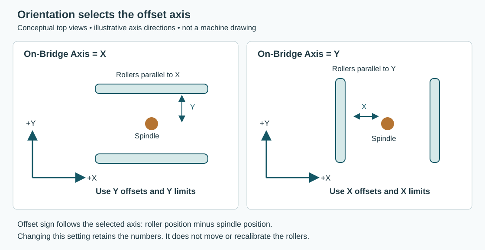

RADONIX · ROUTERXYZBC+TC · CHAPTER 13
Operator Manual · English · 8 October 2026
Rollers and Machine-specific Equipment
Identify the equipment fitted to your machine, understand when the application requests roller operation, and distinguish an off command from confirmed mechanical clearance.
Expanded draft for review. This chapter explains the supplied roller control. The delivered machine instructions define the actual mechanisms, approved workholding, operating clearances and additional options. Saved machine logic may differ from the supplied version.
13.1 Identify the equipment and separate commands from confirmation
A router can have equipment around the spindle that moves or changes state during a job. On some machines, rollers help support or restrain material while the head travels. Other machines have a different arrangement, only one roller, or no rollers at all. The application provides names and settings for two rollers, but the presence of those names does not tell you what is physically fitted. Begin with the actual machine and its commissioning record.
In this chapter, Roller 1 and Roller 2 identify two separately controlled devices. Do not assume that Roller 1 means the front, left or nearest roller. The numbering must agree with the machine labels and wiring record. Ask the person handing over the machine to identify each assembly, its moving parts, its free position and its position sensor from outside the movement area.
Four different questions
For each device, establish whether it exists, whether its use is enabled in the application, whether the required control and feedback connections have been commissioned, and whether there is an approved procedure for this job. These questions are related, but one answer does not establish the others. A physically fitted roller can be disabled in the settings. An enabled roller can have a missing sensor connection. A working roller can still be unsuitable for a particular thin, narrow or irregular workpiece.
| Item | What it tells you | What it does not prove |
|---|---|---|
| Roller 1 or Roller 2 | The identity used by the application. | Which physical assembly it is, until matched to the installation record. |
| Roller enabled | The configured roller participates in the supplied automatic control and exchange checks. | That it is pressing the material, correctly adjusted or mechanically free. |
| Roller output on or off | The requested state of the roller control signal. | That the cylinder, valve or mechanism has completed its movement. |
| Free-position feedback | The configured sensor reports the state used to confirm clearance for exchange. | That the complete machine area is clear of every obstruction. |
| An equipment name in a list | The application has a place for that signal or setting. | That the equipment is installed or that a complete operating sequence exists. |
Learn what “free” means on your machine
The supplied exchange check expects an enabled roller's correctly connected free-position sensor to be HIGH when the roller is free. HIGH is the active logical indication seen by the control; it is not a height in millimetres. A LOW indication means the required confirmation is absent. It does not, by itself, distinguish a roller still moving from an obstruction, a failed sensor or a wiring problem.
The physical free position may be a raised or retracted position, depending on the construction. This manual therefore uses “free” rather than assuming that every roller moves up in the same way. Similarly, an off output means that the application is no longer requesting roller operation. It is not permission to put a hand underneath the assembly. Mechanical movement, stored pressure and access precautions are defined by the delivered machine instructions.
The installed roller assemblies
Insert a photograph taken from a safe position with the machine secured under its approved access procedure. Label the spindle, bridge, Roller 1, Roller 2, the free-position sensors and the positive X and Y directions. Identify absent equipment explicitly rather than illustrating a different machine.
Suggested file: assets/images/13-installed-equipment.png. Replace this box with the photograph and retain an installation-specific caption.
Finally, identify the approved primary workholding. Do not assume that automatic roller operation replaces the clamps, vacuum system or other restraint specified for the material. The supplied roller control compares positions; it does not measure whether a loose piece is held securely. Before moving on, you should be able to point out the installed equipment and explain separately what a command, a sensor indication and a visual observation tell you.
13.2 Understand the bridge direction and the offset axis
Before a roller position can be understood, you must know which way that roller lies across the machine. Imagine looking down onto the bed. A roller has a long direction along its own length and a separate direction in which it sits ahead of or behind the spindle. These two directions are perpendicular to each other. The application uses that distinction when deciding whether each roller lies within the job's cutting extent.
The setting called On-Bridge Axis identifies the axis that travels along the bridge. In the supplied arrangement, the rollers are parallel to this axis. If the selected value is X, the roller lengths run along X and their distances from the spindle are measured along Y. If the selected value is Y, the roller lengths run along Y and their distances from the spindle are measured along X.
| On-Bridge Axis | Roller length runs along | Offset and cutting limits use | Question asked by the control |
|---|---|---|---|
| X | X | Y | Is this roller's Y position between the accepted minimum and maximum cutting Y positions? |
| Y | Y | X | Is this roller's X position between the accepted minimum and maximum cutting X positions? |

Do not use your viewing position as the reference
“Front”, “behind”, “left” and “right” depend on where you stand. Axis names and their positive directions belong to the machine. Walking around the bed does not reverse an offset. Rotating the preview on the screen does not change the physical orientation setting either. Use the machine's marked directions and the coordinate explanation in Chapter 5.
Example: a roller that spans the width
Suppose the machine's bridge axis is X and its rollers extend parallel to X. A roller can span a large width while sitting 150 mm away from the spindle along Y. The relevant offset is that 150 mm separation along Y, with the correct sign. It is not the roller's length, diameter, distance from the floor or the width of the workpiece.
What the setting changes
The orientation setting changes which coordinate direction the application uses. It does not rotate the machine, turn the drawing, exchange the roller numbers or measure their positions. In particular, changing from X to Y retains the existing numeric offsets. The same displayed number would then be used along a different axis. A number that was correct before that change may therefore describe the wrong physical relationship afterwards.
For an operator, orientation is normally information to verify against the approved setup, not a value to try until roller behavior looks better. If the setting disagrees with the installed arrangement, stop preparation and report the discrepancy. Have authorized personnel verify the geometry and the associated offsets together. Do not change the orientation during a job or use it to compensate for a reversed sign.
You can inspect the relevant settings under the Router group, subject to your access rights. The exact entry is On-Bridge Axis; its supplied initial value is X. An initial value is a starting configuration, not a statement that every delivered machine has this arrangement. Before reading the next section, identify the axis used for offsets on your machine and the positive direction of that axis. This turns a number with a plus or minus sign into a physical relationship you can explain.
13.3 Read the signed distances without changing the work zero
The two roller offsets describe the positions of the rollers relative to the spindle. An offset here is a signed distance in millimetres. It tells the application how far along the selected axis the roller is from the spindle. It does not tell the machine to move by that distance, and it is not the workpiece zero, the tool length or an allowance to leave on the cut.
The rule is roller position minus spindle position, using the axis identified in the previous section. If the roller lies farther in the positive direction than the spindle, its offset is positive. If it lies in the negative direction from the spindle, its offset is negative. When comparing positions for this purpose, both positions must use the same coordinate reference. Otherwise the subtraction has no useful physical meaning.
Example: two rollers on opposite sides
With On-Bridge Axis set to X, use Y. Suppose the spindle is at Y = 400 mm in a common reference, Roller 1 is at Y = 550 mm and Roller 2 is at Y = 280 mm. Roller 1 is 150 mm in the positive Y direction from the spindle, so its offset is +150 mm. Roller 2 is 120 mm in the negative Y direction, so its offset is −120 mm.
Move the whole assembly 50 mm in positive Y and the three positions become 450, 600 and 330 mm. The offsets remain +150 and −120 mm. The assembly moved; the separation between its parts did not change.
| Displayed setting | Meaning | How to read it |
|---|---|---|
| Roller 1 Enabled | Includes Roller 1 in the automatic policy. | Enabled is permission to participate, not a present-position indication. |
| Roller 2 Enabled | Includes Roller 2 in the automatic policy. | It is independent of Roller 1; the installed arrangement determines which should be enabled. |
| Roller1Offset | Signed position of Roller 1 relative to the spindle, in mm. | Use Y for an X bridge axis; use X for a Y bridge axis. |
| Roller2Offset | Signed position of Roller 2 relative to the spindle, in mm. | Keep its own sign and value; do not assume it is the opposite of Roller 1. |
| Release Timeout | Maximum wait for enabled rollers to be confirmed free before exchange motion. | The unit is milliseconds. A value of 5000 means 5 seconds; it is not a travel distance. |
Why the sign matters as much as the number
An offset of +150 mm and an offset of −150 mm have the same distance but identify opposite sides of the spindle. Using the wrong sign changes where the application thinks the roller lies relative to the cutting region. The displayed spindle position may look entirely reasonable while the wrong roller is requested or a roller changes state at an unexpected place.
Do not change a work origin to hide this problem. A work origin locates the job on the machine; a roller offset describes the assembly. Changing one to compensate for the other can move the cutting job while leaving the underlying geometry error unresolved. Likewise, a roller does not need a new offset simply because a different workpiece zero has been selected.
Verify settings; do not experiment during production
The supplied initial configuration has both rollers disabled and both offsets set to zero. Those values allow an unconfigured profile to exist; they do not describe an inspected, installed pair of rollers. A zero offset means the roller is treated as having the same coordinate as the spindle along the comparison axis. It does not mean “ignore this setting” or “automatically find the roller”.
Compare the displayed values with the approved machine record before using the equipment. If a roller has been repositioned mechanically, a number looks implausible or a sign is uncertain, refer it for measurement and verification by authorized personnel. The routine operator task is to recognize a discrepancy and provide the current values. Physical measurement, calibration and proving a revised configuration require the machine's commissioning procedure.
After an authorized correction, the responsible person must establish that the value has actually been accepted and that the installed operation is correct before production resumes. The ability to type into a field is not an instruction to alter it. For normal operation, keep the approved settings and concentrate on confirming the right job, material and equipment state.
13.4 Understand the cutting extent used by the rollers
When a job is successfully prepared, the application obtains the outer limits of its cutting geometry. Think of the smallest rectangular extent that contains those cutting movements when viewed from above. There is a minimum and maximum X position and a minimum and maximum Y position. The roller control selects one pair of limits according to the bridge orientation.
For rollers parallel to X, only the minimum and maximum cutting Y positions are used in the roller comparison. For rollers parallel to Y, the comparison uses the minimum and maximum cutting X positions. Each roller's position is then checked against that interval. Being exactly at either limit counts as inside. Other conditions must also be satisfied before an output is requested, as explained in Section 13.5.
The cutting extent belongs to the prepared job
The limits come from the accepted job preparation, not from a measurement of the board. The supplied logic does not look at a camera, touch the material edge or ask whether there is solid material under the roller. It also does not use every rapid travel movement as if it were a cutting edge. A large travel to another location and the extent of the cutting geometry are different information.
When loading a replacement file begins, the previous roller cutting limits are made unavailable. Usable limits are supplied again only from an accepted preparation with cutting bounds. Consequently, a missing or unsuccessful preparation is a reason that automatic roller requests may remain off. Do not assume that a shape previously visible on the screen continues to supply valid limits for a new job.
| Information | Used by the supplied roller comparison? | Meaning for the operator |
|---|---|---|
| Prepared cutting minimum and maximum along the selected axis | Yes. | The comparison covers the overall cutting interval, including space between separate features. |
| Actual spindle position and the signed roller offset | Yes, expressed in the matching program coordinate frame. | The request follows the calculated position of each roller. |
| Board outline, loose pieces or gaps in the material | No direct material detection. | Confirm support and workholding for the actual workpiece separately. |
| Spindle height and the position along the other horizontal axis | Not part of this interval test. | The test is not a three-dimensional clearance check. |
| Whether the current movement is actively cutting | Not an additional condition in this roller test. | A qualifying running traverse inside the interval can also produce a roller request. |
Why a machine-position number cannot be compared directly
The job may be placed away from the machine origin and may have coordinate corrections applied. The application therefore translates the actual spindle position back into the coordinate frame used by the prepared cutting limits before adding the roller offset. As an operator, you do not need to calculate this during a normal run. You do need to avoid comparing a raw machine-position reading with a number from the drawing and concluding that the roller is wrong.
Example: the same physical location in two references
Suppose the comparison uses Y, the machine reports the spindle at Y = 1400 mm, and the applicable reference is +1000 mm with no other Y corrections. In the program frame, the spindle is at 400 mm. A roller offset of +150 mm places that roller at 550 mm in that same frame. For cutting limits of 100 to 900 mm, 550 lies inside. Comparing 1550 directly with those limits would mix machine and program references.
An interval is not a model of the workpiece
Suppose a job cuts two separate groups of features with a wide gap between them. The overall minimum and maximum can span both groups and the gap. A roller located in the gap may still be inside the interval. Similarly, raising the tool above the material does not, by itself, tell this comparison to turn the roller off.
This is why the practical question is not merely “does the preview look right?” Check that the approved roller arrangement is suitable for the complete job, including transfers between features, openings in the stock and any pieces that become free. Use the machine's setup procedure for those decisions. The position comparison helps automate an approved arrangement; it does not establish that the arrangement is mechanically suitable.
13.5 Recognize when automatic roller operation is requested
Normal roller operation is automatic in the supplied machine logic. There is no need to calculate a distance and switch a roller manually each time the spindle crosses a feature. The application repeatedly evaluates the current operating conditions and the calculated roller positions. Each roller can be requested independently, so one output on and the other off can be a normal result.
Start by separating permission to operate from the position test. The operating conditions must first allow roller use. Only then does the control decide whether each enabled roller is inside the relevant cutting interval. A roller being in the middle of the board is not enough if the main program is stopped or the required job limits are unavailable.
| Condition | Plain-language meaning |
|---|---|
| The main machining path is running and is not under a stop command. | A loaded file or a moving axis alone does not establish this state. |
| A spindle direction command is active, without the background logic requiring a spindle stop. | This is a command condition, not a measured spindle-speed threshold. |
| No automatic tool exchange is active. | The rollers are held off through the exchange sequence. |
| Accepted cutting bounds are available. | The control has a valid interval from the prepared job. |
| The particular roller is enabled. | Roller 1 and Roller 2 are considered separately. |
| That roller's calculated position is within the interval, including its ends. | The signed offset is added to the spindle position in the matching coordinate frame. |
Read the result in the context of the current operation
Manually starting the spindle does not by itself operate the rollers. Jogging an axis does not by itself operate them either. In an ordinary standalone positioning or measurement operation, the main machining path is not running, so the automatic roller conditions are not satisfied. These are explanations of the supplied control, not instructions to test a mechanism by starting unrelated movements.
During a qualifying program run, a roller may be requested even while the current movement is a transfer between cuts. The interval test described in Section 13.4 does not ask whether the tool is touching material at that instant. Avoid the misleading shortcut “rollers are on only when cutting”. Their behavior depends on the whole set of conditions in the table.
Stationary axes do not prove an off command
A machine can look stationary while a program remains active. A zero feed override, a wait or a pause must be understood through the actual path and command state; simply seeing no motion is insufficient. In particular, do not use a feed percentage as a roller-release control. Use the approved stopping procedure and confirm the resulting equipment state.
In each normal evaluation of the supplied background logic, the roller requests are first set off and are turned on only when the conditions qualify. A main-path stop command, an inhibited spindle request, an active tool exchange or unavailable cutting bounds prevents these automatic requests. However, an off request and completion of the physical release remain separate events. The valve or mechanism may still be moving, and a fault may prevent it reaching its free position.
Example: one roller inside, one outside
Assume the cutting interval is 100 to 900 mm. The spindle is at 800 mm in that frame, Roller 1 has an offset of +150 mm and Roller 2 has an offset of −120 mm. Their calculated positions are 950 and 680 mm. If both rollers are enabled and all other conditions qualify, Roller 1 is requested off and Roller 2 on. This difference is expected from their positions; it is not automatically a wiring fault.
What to do when behavior surprises you
Follow the machine's stopping procedure if the behavior makes the setup doubtful. Note the operation in progress, the job, the spindle command, the roller involved and whether the issue concerns the output indication or the physical mechanism. Do not repeatedly jog across a suspected boundary, change an offset during the run or force an output to see what happens.
The behavior described here assumes the supplied background program is running and the equipment is commissioned correctly. Disabling that program or losing communication is not a validated way to release equipment. Similarly, a custom saved machine program can change the behavior. If the delivered sequence differs, obtain its approved instructions before relying on this chapter's automatic-operation explanation.
13.6 Prepare the installed equipment before a job
Equipment preparation is part of preparing the machine, not an extra action after pressing Run. Your aim is to establish that the fitted devices, the approved configuration and the physical setup all agree. For a familiar machine, this becomes a short, repeatable routine. After maintenance, a configuration change or a different material setup, it may require a new handover from the responsible person.
Begin with the pre-start and access precautions in Chapter 2. Any hands-on inspection must follow the machine's approved isolation and stored-energy procedure. A stopped program, an open configuration window or an off output is not an isolation procedure. The steps below do not require you to operate a valve manually or to put a hand into the roller movement area.
- Identify the job and the approved equipment arrangement.
Check which rollers or other devices are required for the material and operation. Confirm the expected primary workholding. Pay attention to narrow stock, openings, fixtures and pieces that may separate during cutting.
- Check the physical setup under the approved access procedure.
Look for loose items, damaged parts, trapped offcuts and changes to roller mounting. Confirm that fixtures clear both working and release movements. Refer any adjustment of pressure, height or mechanical stops to the machine-specific procedure.
- Inspect the recorded application settings.
When permitted, open Configuration and locate the Router group. Read On-Bridge Axis and the entries in its Roller group. Compare enabled states, both signed offsets and Release Timeout with the approved record. Keep this an inspection unless a change is explicitly part of an authorized setup procedure.
- Establish the expected free-position indications.
From a safe viewing position, identify whether each required roller is physically free and whether its configured indication agrees. If either indication is uncertain, report it before requesting an exchange. Do not substitute a manually forced input for confirmation.
- Confirm successful job preparation and the intended work reference.
Use the accepted job and its preview together with the setup sheet. A failed or incomplete load must be resolved. Check the entire operating area, including movements between features, rather than only the finished part outline.
- Return to the main window and complete the final run check.
Read the machine state again, clear the area and follow the normal start procedure. Observe the initial equipment behavior from the designated position. An unexpected movement is a reason to stop and investigate, not to adjust values while the job continues.
| Check | Expected result | If it is not established |
|---|---|---|
| Equipment identification | The physical devices match their numbers and approved use. | Obtain a machine-specific handover. |
| Configuration comparison | Orientation, enabled states and offsets match the current approved record. | Report the discrepancy; do not adopt default values as a correction. |
| Workholding and clearance | The whole job is suitable for the installed arrangement. | Revise the physical setup through the approved process. |
| Free-position observation | Required feedback agrees with the observed free state. | Have the mechanism and feedback checked before exchange. |
| Loaded job | The intended file has completed preparation without an unresolved failure. | Resolve preparation and recheck the resulting job. |
The commissioned Router and Roller settings
Insert one or two screenshots from the delivered application showing On-Bridge Axis and the Roller group with both enable settings, both offsets and Release Timeout. Keep captions and units legible. Add a caption identifying these as that machine's approved example values, not universal settings. Do not include passwords.
Suggested file: assets/images/13-roller-settings.png. If two views are necessary, label them A and B under the same figure.
The initial signal list does not assign the roller outputs or their free-position inputs to physical connections. That work belongs to commissioning. Merely enabling a roller is not a complete installation step. If a new machine has never been handed over with the equipment demonstrated, do not treat production as its first functional test.
Record any approved change that affects the arrangement before handing the machine to another operator. A short handover should identify what changed, who verified it, which settings record now applies and whether a job remains interrupted. This prevents the next person from treating an unexplained configuration difference as normal.
13.7 Wait for confirmed roller clearance before tool exchange
A roller can be harmless in its machining position yet obstruct a movement toward the tool rack. For this reason, a physical automatic tool exchange begins with a separate roller-clearance stage. The supplied sequence does not treat “roller output off” as enough. It waits for the required free-position confirmation before the exchange's first movement.
This section expands the roller part of Chapter 11. The rest of the tool-change conditions still apply: the spindle, tool grip, rack, movement route and current tool state must also be correct. Passing the roller check does not certify the complete exchange area.
Follow the sequence as an operator
- The exchange becomes active.
The supplied control inhibits both roller outputs. Any confirmation from a previous exchange is cleared; the current exchange must establish its own clearance.
- The first stage waits for the rollers.
The status can read “Waiting for enabled rollers to reach their free position.” The application checks that both roller commands are off and that every enabled roller has its required free-position feedback.
- The required feedback becomes valid.
Each enabled roller needs an enabled, physically assigned input that reads HIGH. Once all required conditions are satisfied, the sequence can leave this stage and proceed with the exchange route. A LOW input at the beginning is a waiting condition, not an immediate bypass or proof of a fault.
- Confirmation remains monitored.
After clearance has been confirmed, losing a required free-position indication during the active exchange causes a fault and stops the exchange. The check is not finished permanently just because the head has left its starting position.
| Roller configuration or state | What the exchange check requires |
|---|---|
| Roller 1 enabled; Roller 2 disabled | Roller 1 must have valid physical free-position feedback. Roller 2's sensor is not required by this readiness calculation. Both output commands must be off at the initial wait. |
| Both rollers enabled | Both physical free-position confirmations are required. One HIGH input is insufficient. |
| Both rollers disabled | No roller sensor is required by the supplied readiness calculation. This configuration must match the approved installation. |
| An enabled roller has no valid physical input assignment | It cannot provide the required readiness, even if an unrelated or virtual indication appears HIGH. |
| An enabled roller initially reads LOW | The sequence waits within Release Timeout for valid confirmation. |
| A required input is lost after clearance was confirmed | The active exchange faults; it does not continue merely because clearance was previously accepted. |
Understand the release timeout
Release Timeout limits the initial wait. The supplied initial value is 5000 milliseconds, or 5 seconds; the setting permits values from 1 to 60000 milliseconds. This is the maximum waiting period for the check, not a guaranteed mechanical travel time and not a delay that must always be used in full. If the conditions become valid earlier, the sequence can proceed earlier.
If the wait expires, the supplied sequence records roller fault 7 and stops the exchange. A longer timeout may only postpone the same failure when a sensor is disconnected, a roller is obstructed or the arrangement is wrong. Do not increase it simply to make an unexplained problem disappear. Any timing change must be based on the installed mechanism's approved behavior and verification.
Keep the required condition intact
Do not disable an installed roller to remove its sensor from the check, force an input HIGH or alter machine logic to skip the wait. Those actions change what the controller accepts as clearance without proving that the physical obstruction has gone. In the supplied sequence, tool-release permission during an exchange also depends on the roller confirmation remaining valid.
A failure can occur before the first exchange movement or later after the check was passed. Report which stage occurred. If a sensor indication returns to HIGH after a fault, that alone is not a completed recovery or an instruction for the machine to resume. The interrupted exchange and tool state must be assessed before another operation is requested.
During a normal wait, remain at the operator position and observe the status. Do not enter the area to help a slow roller by hand. If there is an unexpected movement or immediate danger, use the machine's emergency procedure. If the sequence stops without immediate danger, preserve the message and follow the recovery steps in the next section.
13.8 Respond to a roller problem and preserve useful evidence
A useful first report describes what happened rather than naming a component as faulty. “Roller 2 did not reach its free position before the exchange stopped” is more useful than “the software is wrong”. Distinguish a command problem, a physical movement problem and a feedback problem. They may look similar from the operator station, but they need different investigation.
If there is immediate danger, follow the machine's emergency procedure first. Otherwise stop the operation using the approved method, keep the area clear and read the message before dismissing it. Do not start another exchange, jog away from the rack or change a setting simply to remove the indication. An interruption can leave the head, tool holder or roller in an intermediate state.
Read the roller fault in its context
The supplied application can report “Spindle result 7: Enabled roller free-position feedback timed out or was lost during tool exchange.” Despite the word “Spindle” at the start, this detail concerns the rollers. It covers two situations: the initial clearance was not confirmed within the allowed time, or confirmed clearance was lost later during the active exchange. The message alone does not identify which physical roller failed.
| Observed situation | What it may mean | Operator response |
|---|---|---|
| Exchange waits without beginning its route. | The required free state has not yet been confirmed. | Observe from the designated position. If the wait ends in a fault, record whether either roller reached its free position. |
| Roller appears free but its required input stays LOW. | Physical appearance and feedback disagree; adjustment, connection or sensor condition may need attention. | Report both observations. Have authorized personnel establish the correct indication. |
| An enabled roller has no assigned physical free sensor. | The supplied exchange check cannot qualify that roller. | Refer the installation or configuration for correction. Do not disable the roller as a shortcut. |
| Exchange began, then stopped with result 7. | Previously accepted roller clearance may have been lost. | Preserve the last stage and position. Use the interrupted-exchange recovery procedure. |
| One roller is on and the other off during machining. | Their offsets may place them on different sides of a cutting limit. | Compare the expected arrangement and job interval before assuming a fault. |
| Output is off but the mechanism remains in an unexpected position. | The request and physical response differ. | Keep clear and obtain mechanical or electrical investigation under the approved access procedure. |
| Rollers stay off after an unsuccessful file load. | Accepted cutting limits may be unavailable. | Resolve the job preparation failure; do not force outputs to compensate. |
Collect evidence without changing the condition
If you are authorized to view the input/output monitor, record the two roller output indications and the two free-position input indications. Use the exact names so the report is unambiguous: Roller1, Roller2, Roller1Sensor and Roller2Sensor. Note which rollers are enabled. Treat the monitor as an observation tool; forcing an input or switching an output is a separate intervention, not part of reading a fault.
Also record the full message, job filename, requested tool, displayed current tool, last visible exchange stage and whether the head had moved. Mention a recent maintenance action, configuration change or intermittent indication if relevant. If the values change before support arrives, preserve the original observation with its time rather than reporting only the later state.
Evidence from a roller-clearance fault
Insert a captured example of the full result message and a read-only view of the relevant input/output rows from an approved test or a recorded incident. Label output commands separately from free-position inputs. Include which rollers were enabled and whether the failure occurred before movement or after confirmation.
Suggested file: assets/images/13-roller-fault-evidence.png. Do not create a live-machine fault just to obtain this picture.
Recover the interrupted operation, not just the indication
In the supplied application, a failed exchange cancels its pending continuation. Restoring a HIGH input does not complete the cancelled route. Before retrying, the responsible person must establish the actual roller positions, spindle grip and tool state, the head's location and a clear route for the next operation. Follow the interrupted-exchange guidance in Chapter 11 as well as the machine-specific recovery instructions.
Resume only after the cause has been resolved and the operation is prepared again deliberately. Do not repeatedly press Run, enlarge the timeout, bypass a sensor or reload machine logic as a general reset. If the state cannot be established reliably, preserve the evidence and hand the machine over for authorized recovery.
13.9 Identify other options and obtain their operating instructions
Different routers can share the same application while having different accessories. A machine may have an unloader, lubrication equipment, a coolant device, an external operator panel or additional spindle equipment. Some names are provided in the standard signal list so that a machine builder can configure an installation. A name in that list is not the same as a finished, commissioned feature.
For an operator, the useful question is: what is installed on this machine, what is its approved control, and how is completion confirmed? Do not infer an operating procedure from a signal name. In particular, an input called RunSwitch does not by itself establish what a physical button will start, whether it must be held or what checks will apply.
| Equipment or indication | What the supplied application establishes | What must come from the delivered machine documentation |
|---|---|---|
| Unloader | Unload first raises Z to its configured upper travel limit, then moves to Start Position, lowers the unloader, moves to End Position and raises it. Horizontal travel is perpendicular to On-Bridge Axis and keeps Z raised. Up Time and Down Time provide fallback delays when sensors are absent; with sensors, confirmation completes immediately and timeout is three times the configured delay. | The fitted mechanism, commissioned mappings and coordinates, travel clearance, completion, stop and recovery procedure. |
| Coolant and Lubricant | Output names are provided; this does not establish an automatic operating cycle. | The installed system, approved use, operating control and checks. Do not assume a program command operates it solely because its name exists. |
| RunSwitch, PauseSwitch and StopSwitch | External input names are available in the signal list. | The actual physical-button functions and their relationship to the screen controls. |
| SpindleToolReleaseButton | A named input is present in the profile. | The approved local-button behavior, if implemented on the delivered machine. Its name alone is not an operating instruction. |
| ToolChanging | The supplied background logic makes this output follow the active exchange state. | Whether it drives an installed lamp or another device, and how that device is labeled. |
| Brake | The supplied Z-brake request depends on the configured axis, mapped drive, servo-on command, drive readiness and absence of drive or coupling faults. | The actual brake arrangement, holding capability, access and service procedure. It is not a manual lifting or lowering control. |
| SpindleTaperBlow | When physically assigned, the supplied control relates the air-blow request to tool release and its feedback. | The air arrangement and approved tool-change procedure. Do not treat this output as a general cleaning command. |
| PressureSensor | If physically assigned, its logical state participates in spindle and exchange permissions. | The required physical pressure, gauge reading and supply checks. A logical HIGH is not a numerical pressure measurement. |
Use a machine-specific option record
Before independent operation, obtain a short record for every accessory you are expected to use. It should identify the physical device, its control and its normal indications. If a particular option is absent, mark it “Not fitted”. If it is fitted but not commissioned, mark that explicitly rather than leaving a blank that another operator could interpret as permission to use it.
| Record item | Information to enter for each installed option |
|---|---|
| Identity and purpose | Machine label, physical location and the operation it supports. |
| Approved use | Suitable jobs and materials, required setup, workholding and clearances. |
| Control | Exact screen caption or physical-button label, including whether operation is momentary, held or automatic. |
| Normal sequence | What moves first, what follows and what indicates completion. |
| Permissions and feedback | Required conditions, expected input indications and the physical state they represent. |
| Stop and recovery | Approved stopping method, access precautions and response to an incomplete cycle. |
| Document control | Machine identity, applicable configuration revision, verification date and responsible person. |
When the delivered machine differs
The machine's saved control programs can contain installation-specific behavior. That is why this chapter identifies the supplied behavior rather than promising that every machine has an identical sequence. If an option has been added or its behavior changed, the corresponding operator instructions must describe the delivered sequence. Operators should not have to read control-program text to discover which button is safe to press.
Do not use an input/output editor as a substitute control panel for undocumented equipment. A direct output change may omit the sequencing, movement checks or confirmations that an approved operation requires. Report the missing procedure and obtain a demonstration and written instructions from the responsible person.
For equipment already covered by this manual, use the complete relevant procedure: spindle operation, tool exchange and tool measurement. This option list helps identify an installation; it does not replace those procedures with a list of signals.
13.10 Work through an example and check your understanding
Use this example to practise reading the equipment behavior without touching the machine controls. All dimensions are teaching values. They are not recommended roller settings, a test program or instructions to move to the listed positions. The purpose is to connect orientation, signed distances, cutting limits and operating conditions in one explanation.
Example: a job with two enabled rollers
Assume On-Bridge Axis is X, so the comparison uses Y. Both rollers are enabled. The approved offsets in this example are +150 mm for Roller 1 and −120 mm for Roller 2. The accepted cutting interval is Y = 100 to 900 mm. Every position in the following table is already expressed in the program frame used for those limits.
For the first six rows, assume the main path is running, a valid spindle direction command is active, no spindle stop is required, no tool exchange is active and the cutting limits are available. Add the appropriate offset to the spindle position, then compare the result with 100 and 900. The end values count as inside.
| Spindle Y (mm) | Roller 1 position (mm) | Roller 1 request | Roller 2 position (mm) | Roller 2 request |
|---|---|---|---|---|
| −100 | 50 | Off: below 100. | −220 | Off: below 100. |
| −50 | 100 | On: at the lower limit. | −170 | Off: below 100. |
| 220 | 370 | On: inside. | 100 | On: at the lower limit. |
| 750 | 900 | On: at the upper limit. | 630 | On: inside. |
| 800 | 950 | Off: above 900. | 680 | On: inside. |
| 1020 | 1170 | Off: above 900. | 900 | On: at the upper limit. |
Now keep the spindle at 220 mm but remove one of the operating conditions. If the main path is stopped, both automatic requests are off despite both calculated roller positions being inside the interval. If a physical tool exchange begins, both requests are also off and the sequence must establish the required free-position feedback before exchange movement. Position alone never tells the whole story.
Example: an exchange that does not get clearance
Suppose both rollers are enabled, the off commands have been issued and Roller 1 is confirmed free. Roller 2 remains LOW. The first exchange stage waits because both confirmations are required. If Roller 2 reaches its valid free state in time, the exchange can proceed. If the timeout expires first, the exchange fails with the roller-related result. Turning Roller 2 off in the enable settings would remove a required check; it would not demonstrate that the obstruction or feedback problem was repaired.
If both sensors first become valid and one is then lost after the head starts toward the rack, the failure belongs to the monitoring stage. Record that difference in the report. The physical tool state and route position may differ significantly from an attempt that never began moving.
Use simulation for learning, not mechanical acceptance
The supplied simulation includes delayed roller feedback derived from the requested output states. This can help explain why a command changes before a confirmation follows. It does not reproduce the actual pressure, friction, obstruction, sensor alignment or holding effect of a real assembly. A successful simulated exchange cannot establish that the real rollers clear the rack route.
Where supervised simulation training is available, use it to recognize the waiting stage and read indications. Confirm the operating mode under the startup procedure before any exercise. Do not copy the example offsets into a production configuration, and do not create a physical fault for practice.
Questions to answer before operating independently
- Which axis supplies the roller offsets on an X-bridge machine?
Y. The rollers are parallel to X, while their separation from the spindle is compared along Y.
- What does a negative offset tell you?
The roller lies in the negative direction of the selected axis relative to the spindle. It does not mean the roller is disabled or faulty.
- Does an on request prove that material is being held?
No. It is a control request based on operating conditions and a calculated position. Mechanical response and approved workholding remain separate matters.
- Does an off request prove clearance for exchange?
No. Each enabled roller must also provide the required physical free-position confirmation.
- Can a roller be requested while travelling between separate cuts?
Yes, if the running conditions qualify and its position lies within the overall cutting interval. The control does not detect the actual material beneath it.
- What should follow a roller fault?
A controlled assessment of the mechanism, feedback and interrupted exchange, followed by an approved recovery. A restored indication alone is not completion.
- Does an Unloader entry establish an unloading procedure?
No. Obtain the delivered instructions for an installed and commissioned option.
You are ready to apply this chapter when you can identify the actual devices, compare the configuration with the approved record, explain the difference between a request and confirmation, and report an unexpected result without altering the condition to hide it. The next chapter addresses opening and preparing the machining program that supplies the cutting geometry.
Documentation basis
Reviewed against the application source on 8 October 2026. This is an operator explanation of the supplied behavior, not a replacement for installation commissioning or the machine manufacturer's mechanical instructions.
Configuration/RouterLinks.csConfiguration/Initialize.csPLCPrograms/Background.plcPLCPrograms/WaitRollers.plcMachining/GCodeInterpreter.csMachining/ToolChanger/ToolChangerRoutes.csandMachining/ToolChanger/ToolChangerCommands.csMainForm.Runtime.cs